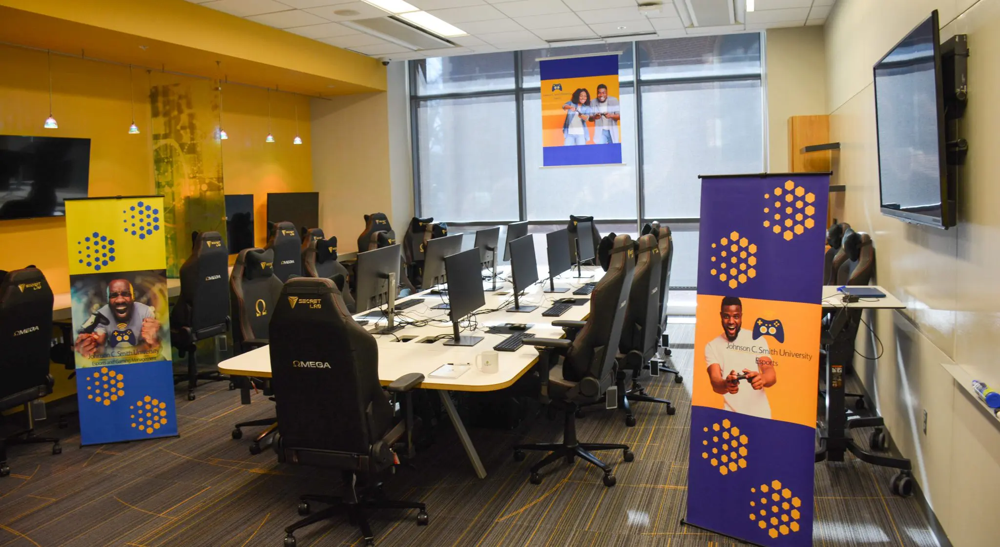
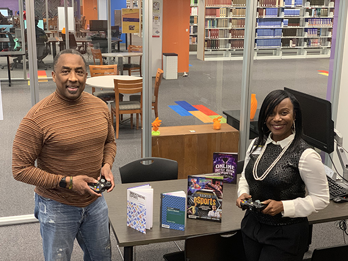
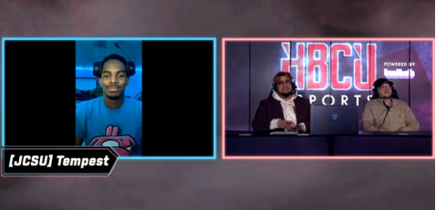

Recent Articles

Ready, Player one? Esports Program at Johnson C. Smith University offers career paths
It's not just a friendly game of Minecraft, according to program leaders at the university.
Esports are becoming a bigger draw for people looking to make a living doing what they love:
playing video games. But one college in the Queen City is leveling up their stake in the game, and how they draw in students to attend and represent their school on a larger stage.
Read More

Game on: Johnson C. Smith University Launches Esports
The Metropolitan College of Professional Studies is launching an esports and gaming management program as a minor in the fall semester,
the first of their kind at a historically black college. JCSU will also offer a non-credit bearing certificate program, which consists of four courses.
Read More

JCSU Esports Club wins First Place in Tournament
JCSU is making a name for itself in the Esports and Gaming world. The University recently just won the HBCU Esports leagues' Fall Calssic Call of Duty Tournament.
Read More